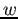
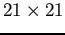
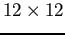

Siguiente: Determinación de la localización Subir: Detección de puntos claves Anterior: Invarianza a escala Índice General
Sea un punto en la imagen , la matriz hessiana en en la escala viene definida como:
| (3.11) |
A pesar de que los filtros gaussianos pueden ser utilizados para el análisis del espacio escala como se introdujo en la Sec. 2.3.1, SURF hace uso de los filtros tipo caja (). Éstos son una aproximación a las derivadas gaussianas segundas y pueden ser aplicados rápidamente cuando se utilizan con las imágenes integrales. Aquà es donde se encuentra presente una de las diferencias que contribuye a una mejora en velocidad del método SURF respecto a SIFT, pues en este último el espacio escala es creado a partir de imágenes suavizadas repetidamente mediante un filtro gaussiano que luego, son submuestreadas (produciéndose un efecto de aliasing indeseado) para alcanzar escalas mayores. En el caso de SURF, el espacio escala es analizado mediante el incremento en el tamaño del filtro. Un esquema del espacio escala SIFT puede verse en la Fig. 2.6 (izquierda) en el que se redimensiona la imagen para obtener las escalas sucesivas; mientras que en el espacio escala SURF en la Fig. 2.6 (derecha) el redimensionamiento se produce sobre el filtro tipo caja y la imagen es siempre la misma.
|
|
Asà el determinante de la matriz hessiana (aproximado) usado por SURF queda definido como:
La derivada parcial de segundo orden gaussiana en la dirección ``y''  puede ser observada en la Fig. 2.7a y su homóloga aproximada en la Fig. 2.7b; en tanto que en la Fig. 2.7c se encuentra representada la derivada parcial de segundo orden gaussiana en la dirección ``x-y'' y su homóloga aproximada (Fig. 2.7d).
|
|
El espacio escala para el descriptor SURF está dividido en octavas. Una octava representa una serie de respuestas obtenidas mediante la convolución de la imagen original con filtros de tamaños cada vez mayores. En total, una octava comprende un factor de escalado de 2 y cada una de ellas es subdividida en un número constante de niveles de escala (véase la Fig. 2.9). En la Fig. 2.8 se puede observar un esquema gráfico del análisis de 3 octavas en donde el eje horizontal, expresado logarÃtmicamente, representa las escalas. Notar que para cada nueva octava, el tamaño del filtro es incrementado al doble (en la primer octava el paso es 6, en la segunda de 12, en la tercera 24, etc.) y cada una de ellas empieza con un tamaño de filtro igual al segundo de la octava anterior. También, se puede observar que las octavas están solapadas, esto, con el objetivo de cubrir todas las posibles escalas. Por ejemplo, para la primer octava el espacio escala comienza con filtros de continuando con los de , , y . Debido a que se realiza una supresión de no-máximos3.1 tanto espacialmente como con las escalas vecinas, las respuestas del hessiano en el primer y último nivel son usadas solo para comparación. Por ello, luego de realizar una interpolación, la escala posible más pequeña es correspondiente a un filtro de , y la más grande a  correspondiente a un filtro de . Consideraciones similares se aplican para las demás octavas. Para más detalles se puede consultar ().
|
|